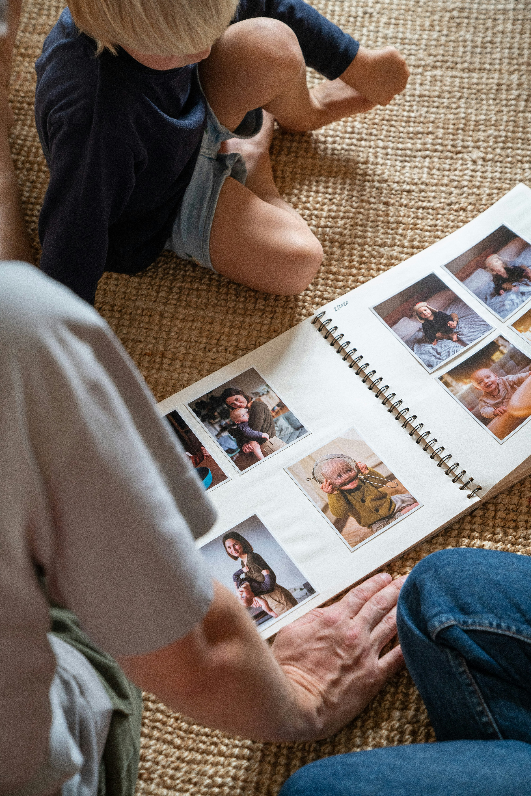

When my first daughter was born, I did what most new parents do: I called my mum to ask what I was like as a baby. Was I a good sleeper? When did I start talking? And she said—with complete sincerity—“I think you probably slept well.”
I thought: surely you remember. Surely you remember everything.
I completely understand her now. But in that moment, I made myself a promise: I would have the answers. If my daughter ever called me one day, I wanted to tell her exactly who she was. Not just the big milestones, but all of it.

Why Most Parents Lose Track
The barrier isn't motivation. Most parents want to document their child's life. The real barrier is the blank page and the sheer volume of daily events. You sit down to write, feel overwhelmed by how much has happened, close the app, and promise yourself you'll do it tomorrow.
Baby Milestones: What to Track
Here is a simplified reference for key developmental stages to watch for during the first 15 months:
- Social Smile: 6–8 weeks
- Rolling Over: 4–6 months
- Sitting Unsupported: 6–8 months
- First Words: 10–14 months
- Independent Walking: 12–15 months
What You'll Actually Want to Remember
Focus on small, fleeting moments rather than major achievements:
- Words they currently mispronounce.
- Their favorite meal of the week.
- A funny phrase they repeated from daycare.
- How they fall asleep at night.
Start capturing memories without friction
PebbleBook sends age-appropriate prompts straight to your phone. 10 minutes a month is all it takes.
Join the Waitlist →